SEM <- metales %>% filter(Organo == "Semilla")Unidad 2. Análisis y representación de datos numéricos
Veremos los análisis a realizar para procesar variables continuas (correlación y regresión) y como representarlas gráficamente de una forma más detallada que como lo vimos hasta ahora.
Correlación
Cuando queremos evaluar la relación entre 2 variables continuas, sin establecer relaciones de dependencia, el análisis que debemos hacer es un análisis de correlación lineal. El test de correlación lineal más utilizado es el de correlación de Pearson, que nos arroja el coeficiente de Pearson, que toma valores entre -1 y 1, según la relación sea inversa o directa. Valores cercanos a cero indican falta de relación entre las variables. La correlación de Pearson tiene como supuestos la distribución normal de las variables (entre otros). Debemos poner a prueba esos supuestos para poder realizar este tipo de análisis.
Comenzaremos creando una base de datos de las semillas:
Veremos primero como analizar de a pares de variables. Lo recomendable es iniciar con una exploración gráfica de los datos, en este caso vamos a relacionar la acumulación de Cu y Zn en semillas.
# Exploración gráfica
plot(SEM$Cu, pch = 19)
plot(SEM$Zn, pch = 17)
plot(SEM$Cu, SEM$Zn)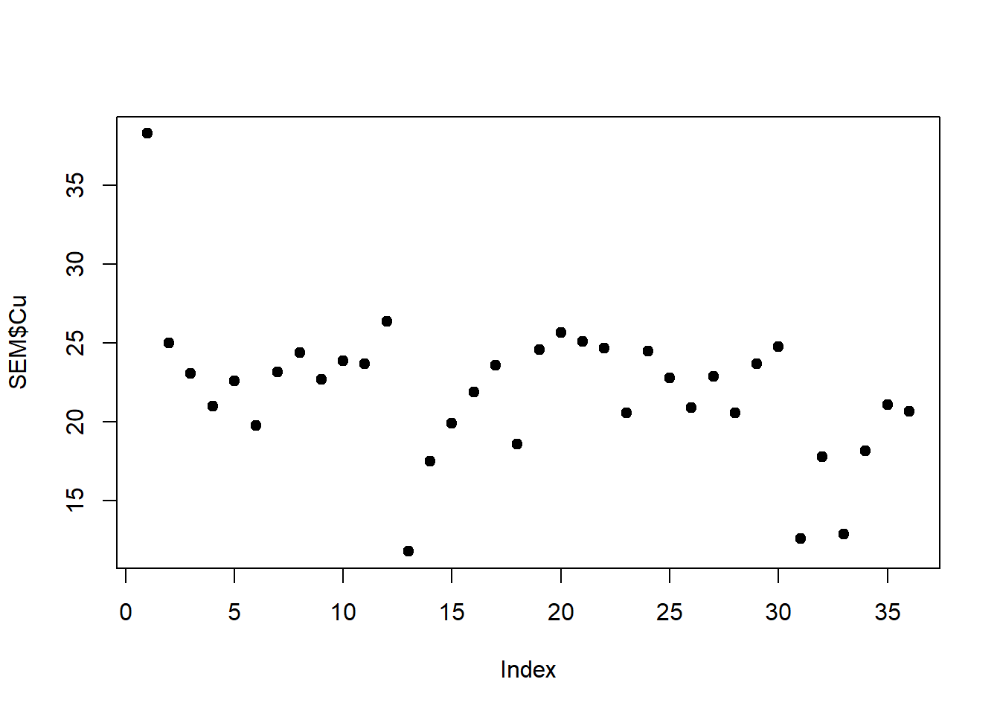
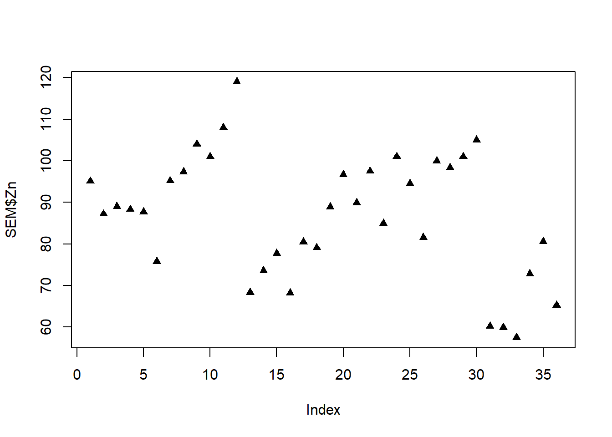
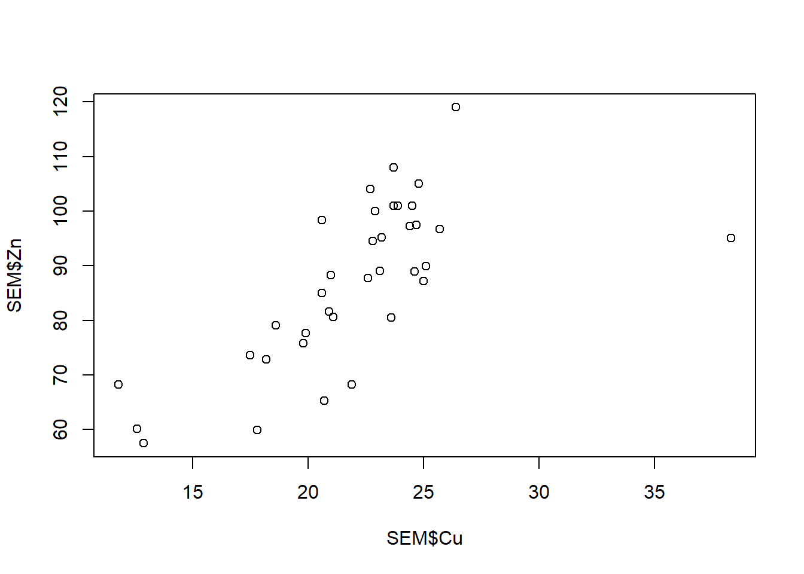
Vemos que hay un valor extremo en el gráfico de Cu, para identificarlo podemos correr identify:
plot(SEM$Cu)
identify(SEM$Cu)Ahora veremos cómo hacer la correlación de pearson, de momento ignorando los supuestos:
cor.test(SEM$Cu, SEM$Zn, method = "pearson")
Pearson's product-moment correlation
data: SEM$Cu and SEM$Zn
t = 5.4405, df = 34, p-value = 4.599e-06
alternative hypothesis: true correlation is not equal to 0
95 percent confidence interval:
0.4558295 0.8256796
sample estimates:
cor
0.6822013 Vemos que nos arroja los resultados del valor del coeficiente lineal de pearson y su valor p asociado.
Análisis de normalidad
En esta sección veremos cómo poner a prueba la normalidad de nuestros datos con el test de Shapiro Wilk y como visualizarlo gráficamente en un qqplot. Recordemos que la hipótesis nula del test es que los datos son normales, por lo que si rechazamos la hipótesis (p<0,05) no hay normalidad:
# Forma analítica
shapiro.test(SEM$Cu)
shapiro.test(SEM$Zn)
# Forma gráfica
qqnorm(SEM$Cu)
qqline(SEM$Cu, col="red", lwd=2)
qqnorm(SEM$Zn)
qqline(SEM$Zn, col="red", lwd=2)
Shapiro-Wilk normality test
data: SEM$Cu
W = 0.87266, p-value = 0.0006623
Shapiro-Wilk normality test
data: SEM$Zn
W = 0.97345, p-value = 0.527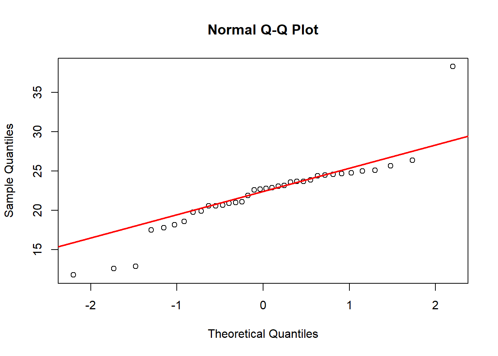
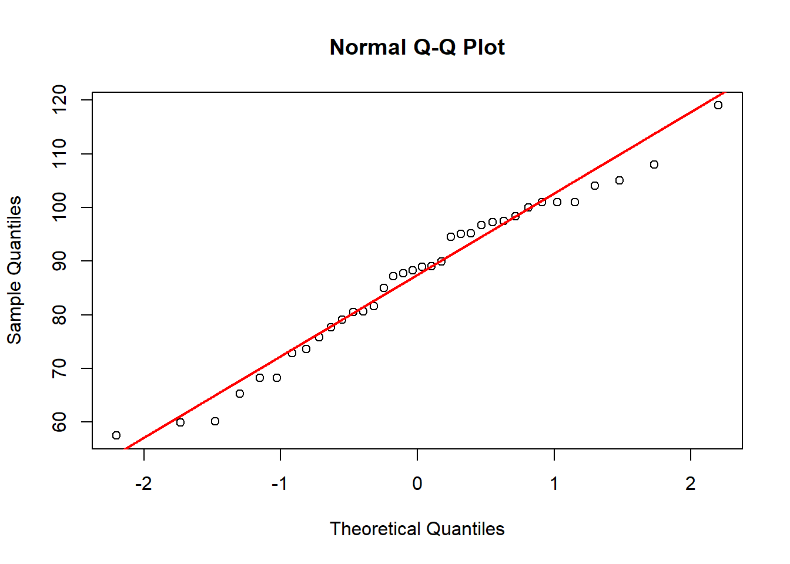
Vemos que para el caso del Cu no son normales los datos de acuerdo con el test analítico, aunque el gráfico muestra un valor extremo. En una primera instancia podemos transformar las variables, que en R lo podemos hacer directamente:
shapiro.test(log(SEM$Cu)) # convertimos al logaritmo en base 10
Shapiro-Wilk normality test
data: log(SEM$Cu)
W = 0.86508, p-value = 0.0004317qqnorm(log(SEM$Cu))
qqline(log(SEM$Cu), col="red", lwd=2)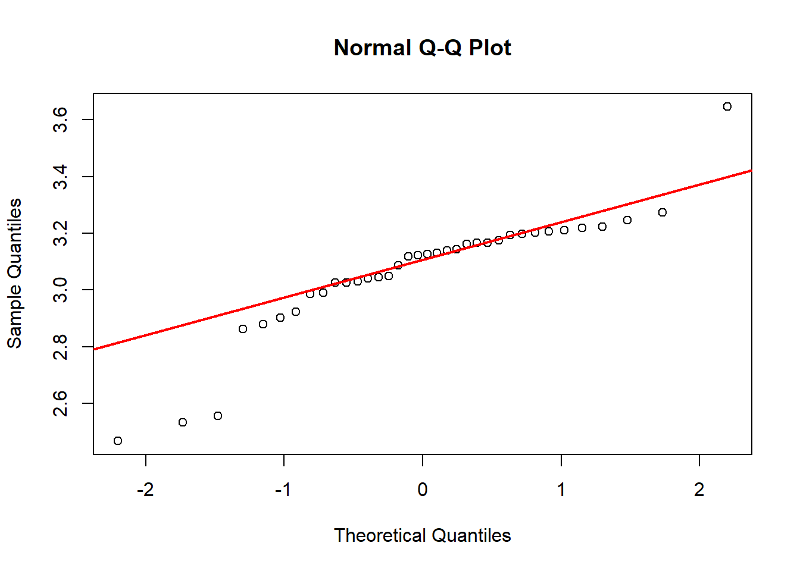
Sigue sin mostrar normalidad. Como vimos antes, el primer valor es mucho más alto que sus réplicas, si tomáramos la decisión de extraerlo hacemos el test sin él:
shapiro.test(SEM[-1,]$Cu)
Shapiro-Wilk normality test
data: SEM[-1, ]$Cu
W = 0.87851, p-value = 0.001098qqnorm(SEM[-1,]$Cu)
qqline(SEM[-1,]$Cu, col="red", lwd=2)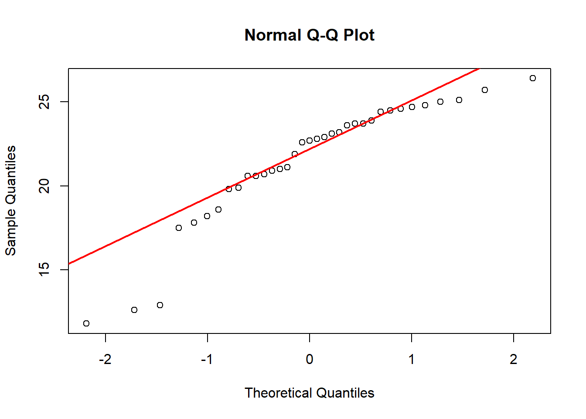
Podemos conformarnos con la eliminación, y correr el test así (no olvidar eliminar el valor en ambas bases de datos):
cor.test(SEM[-1,]$Cu, SEM[-1,]$Zn, method = "pearson")
Pearson's product-moment correlation
data: SEM[-1, ]$Cu and SEM[-1, ]$Zn
t = 7.5311, df = 33, p-value = 1.161e-08
alternative hypothesis: true correlation is not equal to 0
95 percent confidence interval:
0.6283377 0.8919974
sample estimates:
cor
0.7950977 Si no logramos de ninguna manera corregir la normalidad, podemos también correr el test no paramétrico de Spearman que no tiene supuestos asociados, aunque también presenta menor potencia. En este caso el coeficiente es el coeficiente de Spearman (rho):
cor.test(SEM$Cu, SEM$Zn,
alternative = "two.sided",
method = "spearman", exact = TRUE)
Spearman's rank correlation rho
data: SEM$Cu and SEM$Zn
S = 2004.8, p-value = 2.233e-07
alternative hypothesis: true rho is not equal to 0
sample estimates:
rho
0.7419853 Muchas columnas a la vez
Existen otros test que permiten correlacionar pares de variables pero correrlas todas a la vez. A diferencia de la función cor.test que solo admite 2 variables, la función cor permite cargar una serie de columnas y luego podemos ver los coeficientes en forma matricial:
CORR <- cor(SEM[, c("Pb", "Cd", "Mn", "Cu", "Zn")],
use = "complete.obs", method = "pearson")
CORR # obtenemos los coeficientes Pb Cd Mn Cu Zn
Pb 1.0000000000 0.1480843 0.3825917 0.1104054 0.0009652035
Cd 0.1480843231 1.0000000 -0.3435795 0.2023747 0.6365851679
Mn 0.3825916853 -0.3435795 1.0000000 -0.3945261 -0.3955337272
Cu 0.1104053538 0.2023747 -0.3945261 1.0000000 0.6822013201
Zn 0.0009652035 0.6365852 -0.3955337 0.6822013 1.0000000000Otra función de utilidad que nos permite ver los coeficientes y los valores p al mismo tiempo es la función rcorr del paquete Hmisc:
library(Hmisc)
CORR.Sem <- rcorr(as.matrix(SEM[,7:11])) #argumento matricial
CORR.Sem # aquí observamos primero los valores de coeficientes y luego el valor p Mn Cu Zn Cd Pb
Mn 1.00 -0.39 -0.40 -0.34 0.38
Cu -0.39 1.00 0.68 0.20 0.11
Zn -0.40 0.68 1.00 0.64 0.00
Cd -0.34 0.20 0.64 1.00 0.15
Pb 0.38 0.11 0.00 0.15 1.00
n= 36
P
Mn Cu Zn Cd Pb
Mn 0.0173 0.0170 0.0402 0.0213
Cu 0.0173 0.0000 0.2365 0.5215
Zn 0.0170 0.0000 0.0000 0.9955
Cd 0.0402 0.2365 0.0000 0.3887
Pb 0.0213 0.5215 0.9955 0.3887 Ahora veremos dos paquetes que nos permiten ver en forma gráfica el resultado de nuestra correlación. El primero es el paquete corrplot del cual usaremos las funciones cor.mtest y corrplot:
library(corrplot)
pValues <- cor.mtest(SEM[,7:11]) # generamos un objeto de los valores p
corrplot(CORR.Sem$r,
type = "upper",
tl.col = "black",
addCoef.col = 'grey20',
p.mat = pValues$p, # para ver los valores p
sig.level = 0.05,
insig = 'blank',
tl.srt = 45)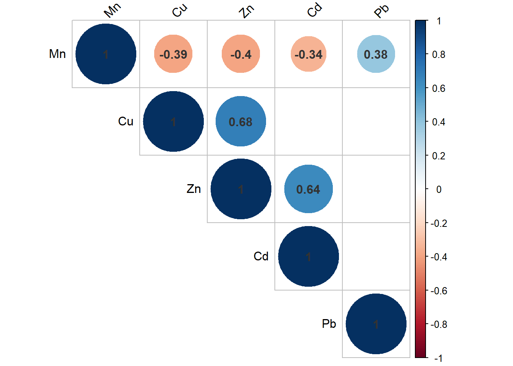
Finalmente, introduciré la función chart.Correlation del paquete PerformanceAnalytics, que permite visualizar interacciones, gráficos de dispersión, coeficientes de correlación y significancia todo al mismo tiempo:
library("PerformanceAnalytics")
chart.Correlation(SEM[,9:11],
histogram=TRUE,
method = "pearson",
pch=19)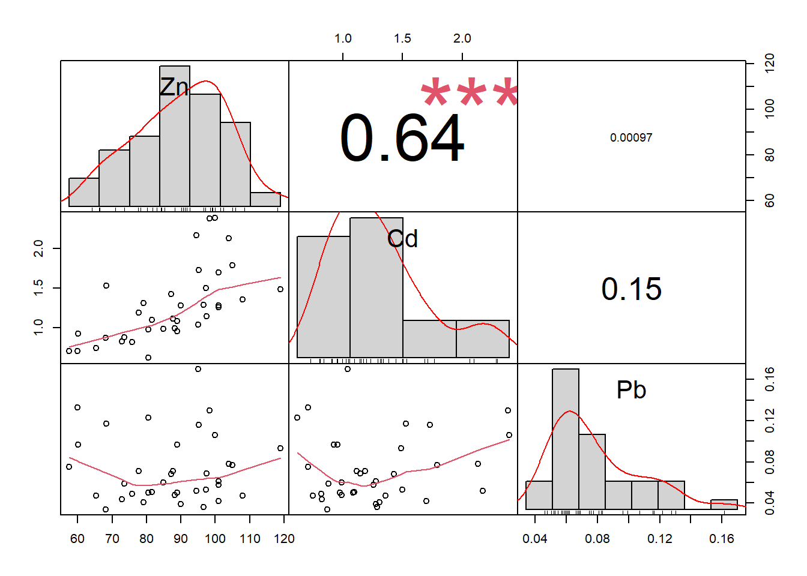
Los invito a profundizar más en el uso de los paquetes por su propia cuenta.
Regresión lineal simple
El análisis de regresión lineal tiene algunos parecidos con el de correlación, pero en este caso hay una de la variables que consideramos que influye en la otra. Es decir, que hay una variable x independiente (regresora) y una y dependiente. Ambas variables deben ser numéricas. El modelo plantea el ajuste lineal de los datos, por lo tanto hay pruebas de hipótesis para la ordenada al origen y la pendiente de la recta de ajuste. Los supuestos del modelo son la distribución normal de las variables y la homogeneidad de los errores. Un detalle importante, es que el modelo solo es válido en el rango de nuestra x.
Por otro lado, existe un parámetro llamado el coeficiente de determinación (R2) que nos da una idea de qué porcentaje de variabilidad de y está siendo explicado con x. Este coeficiente toma valores entre 0 y 1, cuanto mayor es mejor es el ajuste de nuestra nube de puntos a la recta.
En nuestro ejemplo para desarrollar una regresión lineal simple, relacionaremos el verdor de las hojas (a través de la medición SPAD) con el Pb acumulado en las mismas. Para ello generaremos una base de datos para las hojas, y haremos un gráfico rápido para ver esa relación:
HOJA <- metales %>% filter(Organo == "Hoja")
plot(HOJA$SPAD, HOJA$Pb, pch= 19)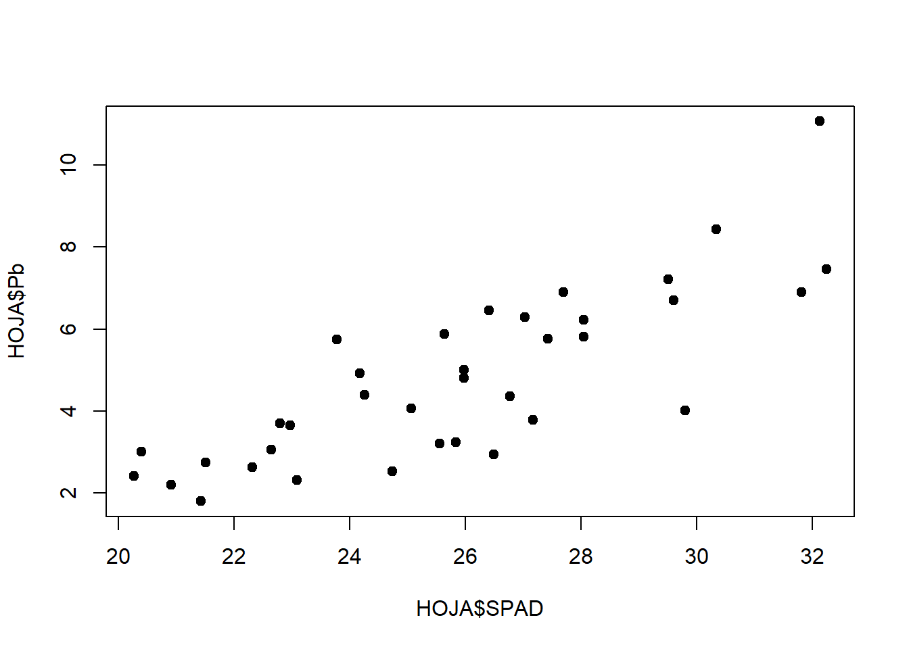
Para realizar una regresión lineal (y que en realidad será de la misma manera para un ANOVA), se debe plantear un modelo lineal mediante la función lm de la forma lm(y~x):
fit1 <-lm(Pb ~ SPAD, data = HOJA)Una vez creado el objeto, vamos a poner a prueba los supuestos, tanto de forma gráfica como analítica. Al someter nuestro modelo a la función plot, se nos crean 4 gráficos para poner a prueba los supuestos. Para verlos todos juntos dividiremos la ventana gráfica con la función layout:
# Gráfico de supuestos
layout(matrix(1:4, 2, 2)); plot(fit1) ;layout(1)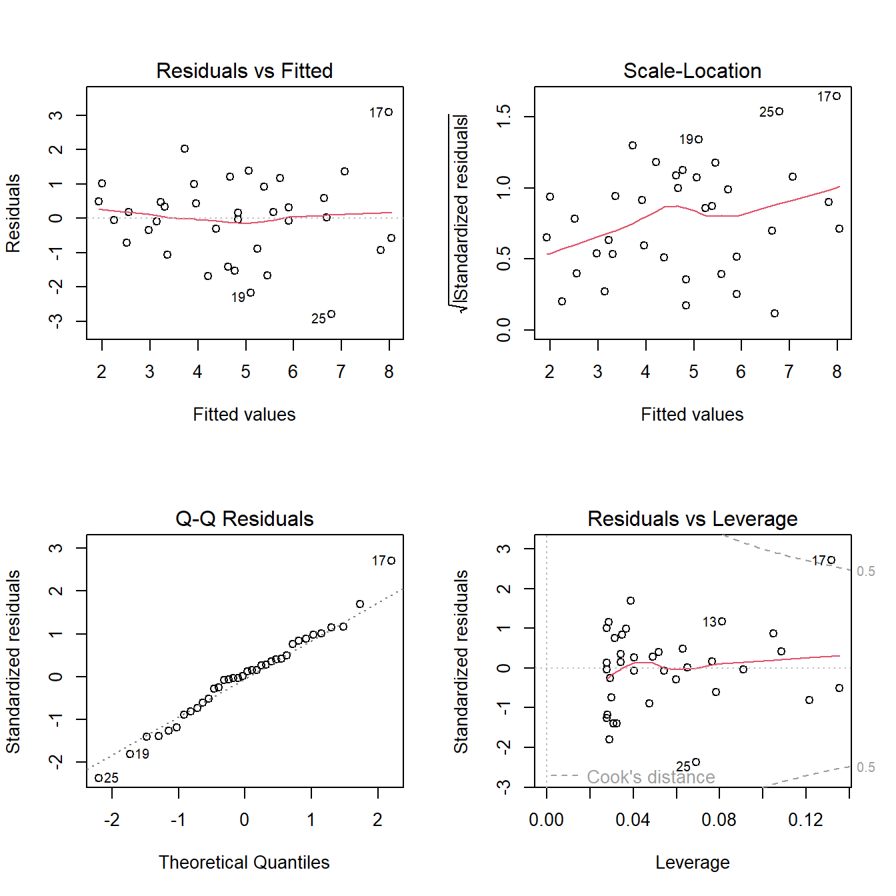
Vemos en los dos gráficos superiores la dispersión de los datos, debemos fijarnos que sea homogénea sin patrones claros. Luego abajo a la derecha nos aparece en qqplot que ya viéramos anteriormente. Finalmente a la izquierda el gráfico de residuos vs leverage que nos permite visualizar la distancia de Cook’s. En forma resumida este parámetro nos permite detectar valores muy influyentes en nuestro resultado y que habría que revisarlos, especialmente si el valor de la distancia es mayor a 1. En nuestro ejemplo, el valor 17 presenta cierta influencia, pero no tanta como para concentrarnos en él. Además podemos poner a prueba de forma analítica la normalidad de los errores:
shapiro.test(resid(fit1))
Shapiro-Wilk normality test
data: resid(fit1)
W = 0.98603, p-value = 0.9207Como no se rechaza la hipótesis nula (p>0,05), no tenemos evidencia para decir que la distribución no sea normal.
Una vez puestos a prueba los supuestos, procedemos a ver la tabla de regresión:
summary(fit1)
Call:
lm(formula = Pb ~ SPAD, data = HOJA)
Residuals:
Min 1Q Median 3Q Max
-2.78646 -0.76173 0.08411 0.66012 3.08197
Coefficients:
Estimate Std. Error t value Pr(>|t|)
(Intercept) -8.43169 1.62522 -5.188 9.79e-06 ***
SPAD 0.51098 0.06243 8.185 1.51e-09 ***
---
Signif. codes: 0 '***' 0.001 '**' 0.01 '*' 0.05 '.' 0.1 ' ' 1
Residual standard error: 1.221 on 34 degrees of freedom
Multiple R-squared: 0.6634, Adjusted R-squared: 0.6535
F-statistic: 67 on 1 and 34 DF, p-value: 1.507e-09Allí podemos ver los resultados de la prueba de hipótesis para la ordenada al origen, la pendiente, el valor de R2 y el p del R2. En nuestro caso el modelo obtenido será y= -8,43 + 0,51 x y explica el 65% de la variabilidad.
El modelo de regresión también puede ser aplicado a una variable x discreta, donde para cada valor de x se encuentren varios valores de y . Para ejemplificar vamos a discretizar nuestra variable SPAD:
# creamos una nueva columna
HOJA$SPAD_cat <- as.integer(round(HOJA$SPAD, digits = 0))
plot(HOJA$SPAD_cat, HOJA$Pb, pch=19)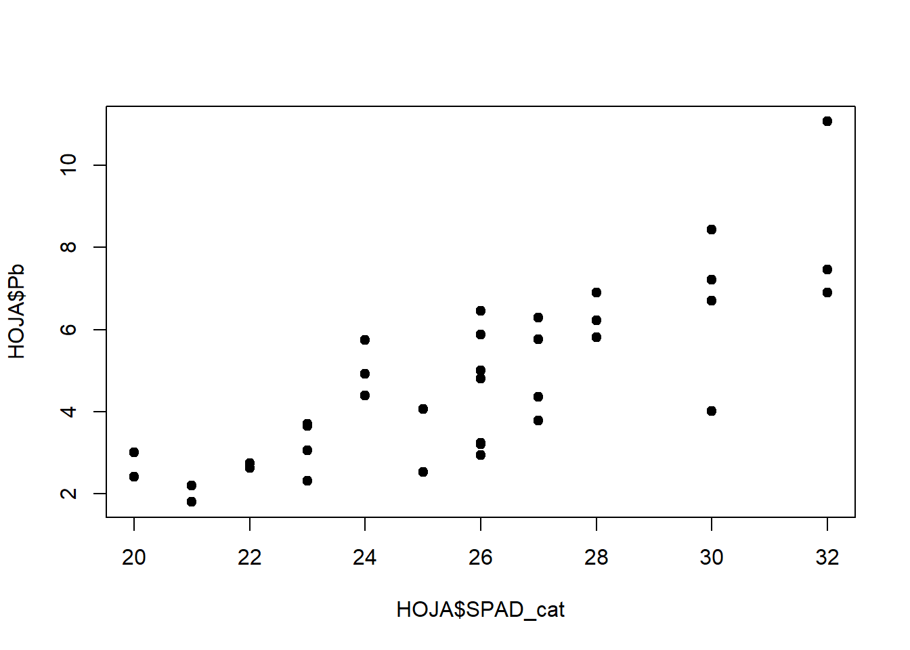
Y corremos nuevamente el modelo, ahora sí podemos hacer un test para homogeneidad de varianzas y un boxplot de los residuos (errores):
fit2 <-lm(Pb ~ SPAD_cat, data = HOJA)
# Gráfico de supuestos
layout(matrix(1:4, 2, 2)); plot(fit2) ;layout(1)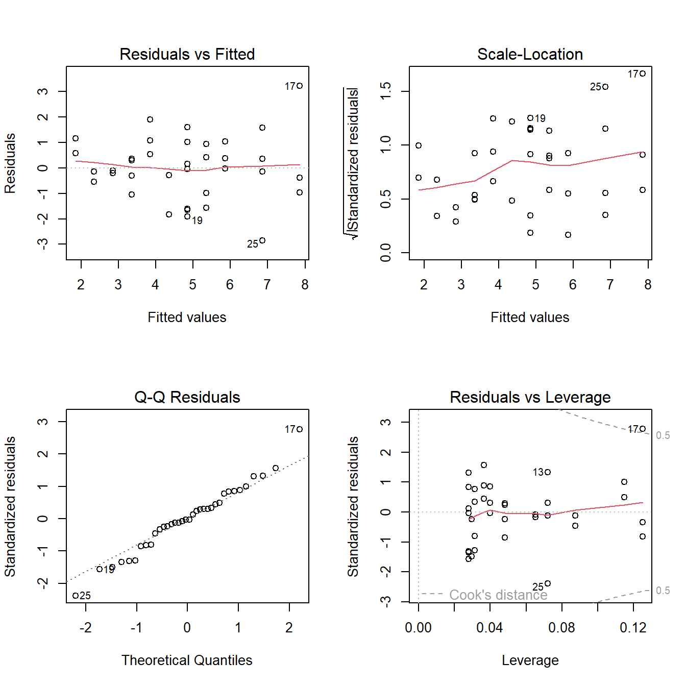
shapiro.test(resid(fit2))
Shapiro-Wilk normality test
data: resid(fit2)
W = 0.98305, p-value = 0.8429bartlett.test(resid(fit2)~HOJA$SPAD_cat)
Bartlett test of homogeneity of variances
data: resid(fit2) by HOJA$SPAD_cat
Bartlett's K-squared = 13.039, df = 10, p-value = 0.2215boxplot(residuals(fit2,type="pearson")~HOJA$SPAD_cat,
ylab="Pearson standarized residuals")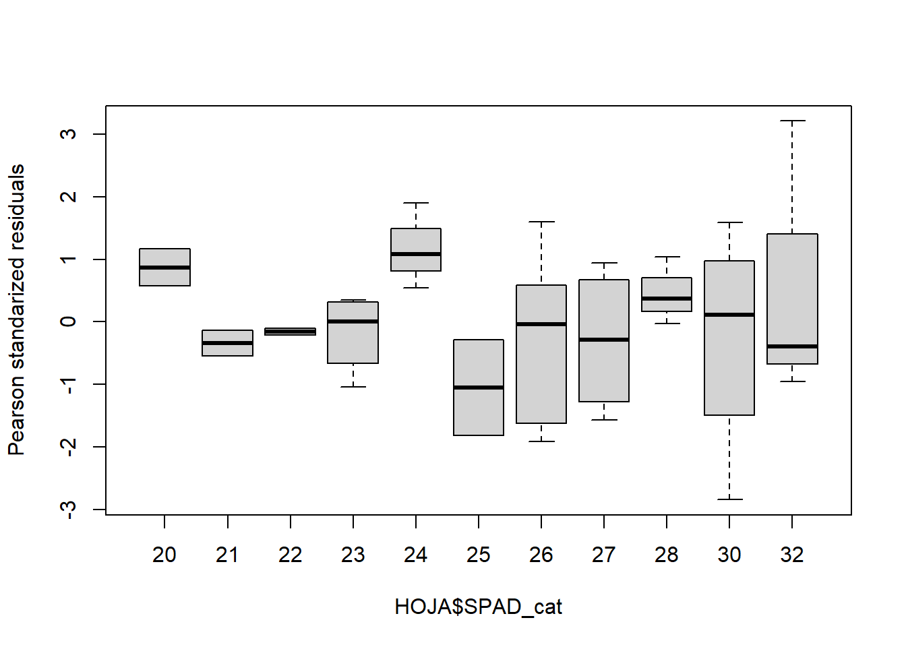
# Tablas
summary(fit2)
Call:
lm(formula = Pb ~ SPAD_cat, data = HOJA)
Residuals:
Min 1Q Median 3Q Max
-2.8450 -0.6495 -0.0374 0.6626 3.2119
Coefficients:
Estimate Std. Error t value Pr(>|t|)
(Intercept) -8.17737 1.63362 -5.006 1.69e-05 ***
SPAD_cat 0.50105 0.06273 7.988 2.62e-09 ***
---
Signif. codes: 0 '***' 0.001 '**' 0.01 '*' 0.05 '.' 0.1 ' ' 1
Residual standard error: 1.24 on 34 degrees of freedom
Multiple R-squared: 0.6524, Adjusted R-squared: 0.6421
F-statistic: 63.8 on 1 and 34 DF, p-value: 2.623e-09Vemos que el resultado es muy similar al de antes, por supuesto.
El modelo de regresión lineal puede ser complejizado agregando más variables regresoras. El planteo del modelo es muy similar, agregando las nuevas variables y su interacción, por ejemplo para dos regresoras: lm(y~ x1 + x2 + x1*x2). Este tipo de modelos exceden los alcances de este taller.
Actividad 2
- A partir de la base de datos creada en el punto 1 de la actividad 1, realice un modelo de regresión que relaciones el PS con la acumulación de Zn en tallos.
- Ponga a prueba los supuestos y concluya.
Gráficos de puntos
En este apartado veremos cómo una vez que tengamos una correlación o regresión lineal hecha visualizarla gráficamente de un modo agradable.
Función plot
La forma más rápida es mediante la función plot de Rbase
plot(Pb~SPAD, data = HOJA, pch=15)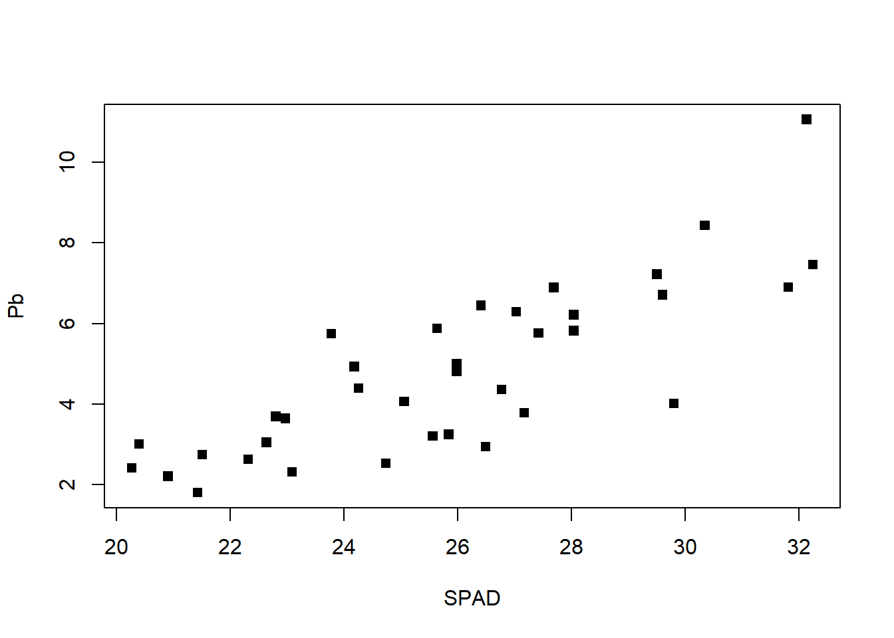
Función lineplot.CI (paquete sciplot)
Con el paquete sciplot, podemos crear gráficos de manera rápida y estéticamente más trabajada con la función lineplot.CI:
lineplot.CI(x.factor = SPAD,
response = Pb,
data = HOJA)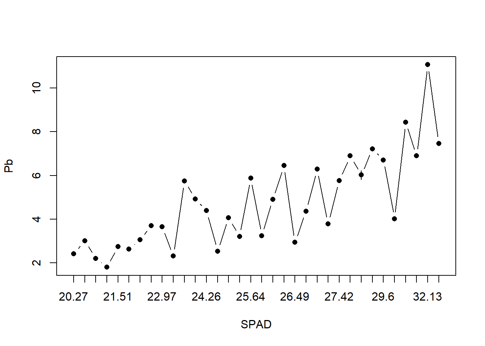
Si queremos ver qué otras opciones ofrece la función, podemos ir a buscar la ayuda de la misma. Para ver la ayuda de la función ejecutamos:
?lineplot.CIY se nos abrirá la ayuda en la ventana 4 de RStudio. Allí vemos una serie de parámetros que podemos modificar. A su vez podemos subdividir en grupos, veamos un ejemplo:
lineplot.CI(x.factor = SPAD,
response = Pb,
data = HOJA, # dataset
group = ET, # criterio de agrupamiento
col= c("seagreen","orange1"), # color
las=1, # cambia la inclinación de los números de eje
ylim = c(0,12)) # establece los límites del eje y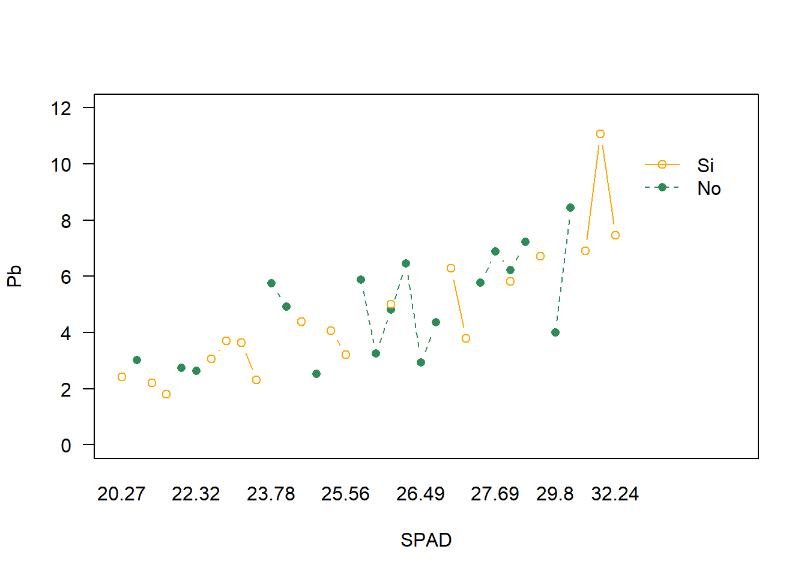
Todo lo que creamos con la función se denominan parámetros primarios del gráfico. Luego se le pueden modificar parámetros secundarios como
lineplot.CI(x.factor = SPAD,
response = Pb,
data = HOJA,
ylab = "")
# aquí agregamos los parámetros secundarios
title(ylab= "Pb", line = 2.5) # título del eje eligiendo la distancia
abline(h=2, col="red", lty=2) # línea horizontal
abline(v=25, col="red", lty=2) # línea vertical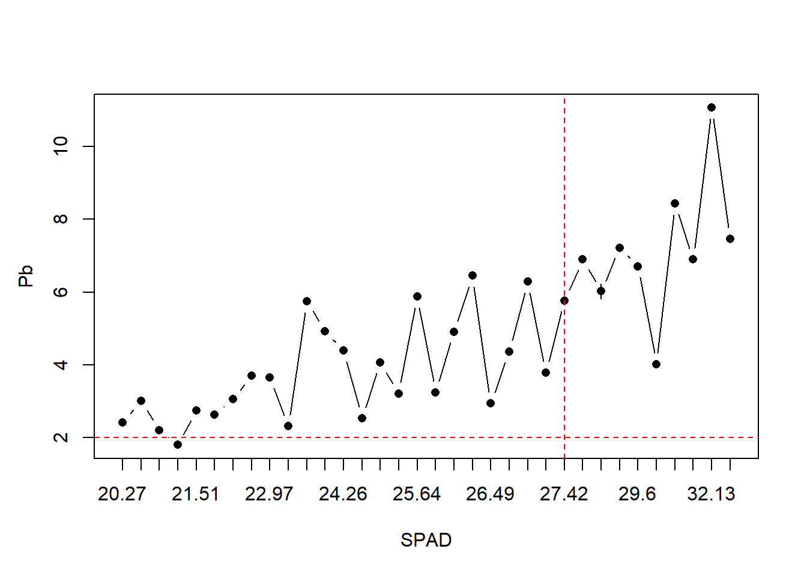
Función ggplot (paquete ggplot2)
Finalmente introduciremos el paquete gráfico ggplot2. Si bien es un poco más complicado de aprender y cada gráfico puede requerirnos más tiempo, es súper versátil y permite hacer infinidad de cosas. La lógica de trabajo es un poco diferente a las anteriores, ya que aquí se trabaja en capas que se van separando por el signo +. Todo lo que veamos en este apartado se aplica a casi cualquier tipo de gráfico con ggplot, por lo que nos servirá también para variables categóricas.
ggplot2 maneja una composición por capas. En la primera capa debemos especificar primero la base de datos a utilizar, y luego el aesthetic, es decir, la estructura que tendrán nuestros datos. En una segunda capa elegiremos el geom que dirá la forma que tomará nuestro gráfico. Con estas capas mínimas podemos obtener un gráfico.
Por ejemplo creamos el gráfico de puntos:
G1 <- ggplot(data = HOJA, # el data set
aes(x = SPAD, y = Pb)) + # x e y dentro de aes
geom_point() # indica que el gráfico es de puntos
G1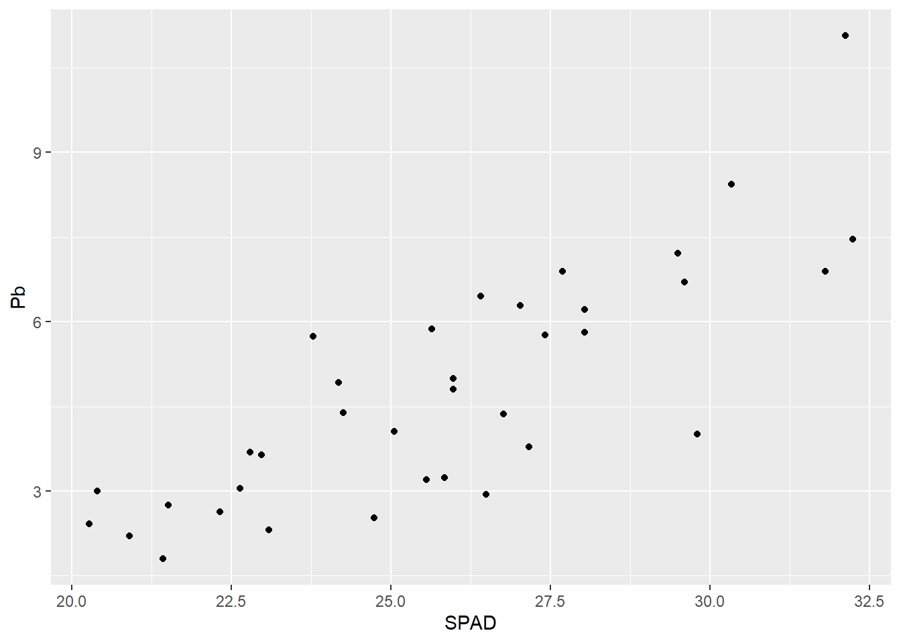
A partir de acá, podemos ir agregando en sucesivas líneas y separados por signo + las características que queramos modificar. Por ejemplo, podemos cambiar el tema general del gráfico (veremos mucho más detalle más adelante) o modificar el aspecto de los puntos dentro del geom:
ggplot(HOJA, aes(SPAD, Pb)) +
geom_point() +
theme_bw()
ggplot(HOJA, aes(SPAD, Pb)) +
geom_point(size = 3, col = "yellow") + # cambiamos tamaño y color
theme_dark()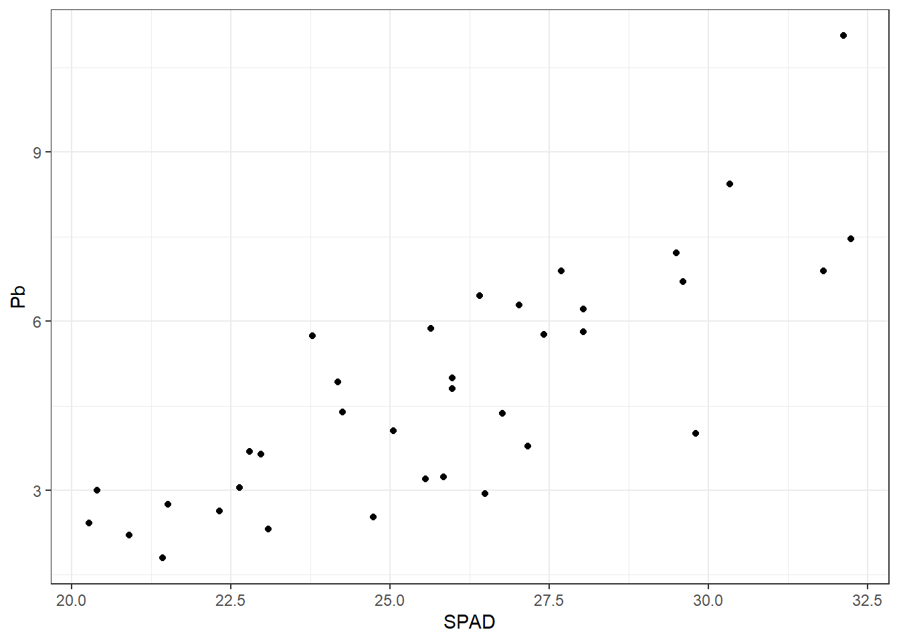
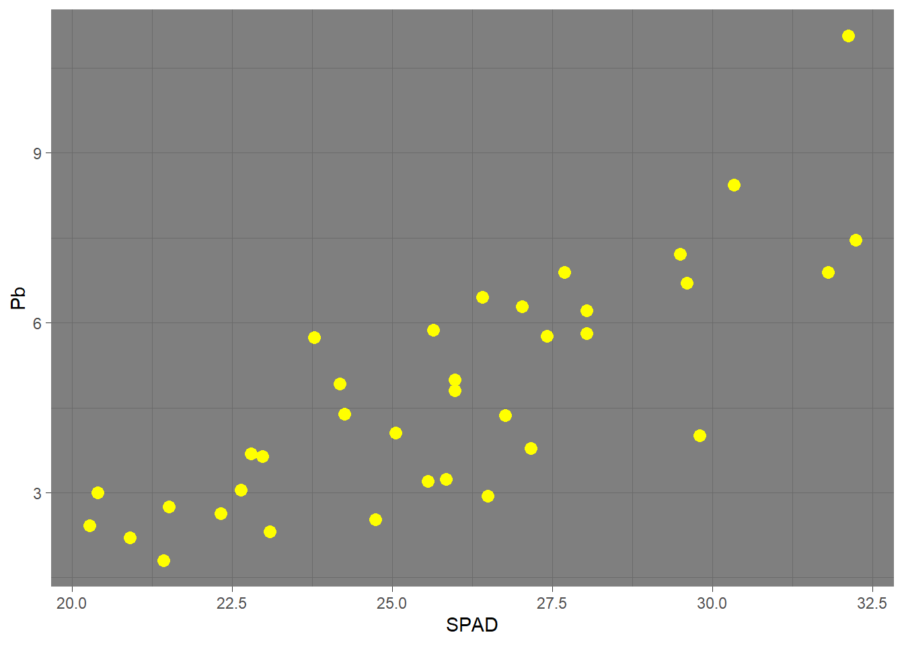
Podemos agregar nuevas capas con otros geoms al mismo gráfico. Así se puede agregar una línea que una los puntos (con un geom_line) o una línea de regresión con su intervalo de confianza (geom_smooth). Es importante mencionar que el orden en el que incluyamos las capas afecta al resultado, la última aparecerá más arriba:
G1 + geom_line(col="deeppink3") # cambiamos el color en los parámetros del geom
G1 + geom_smooth(method = "lm")`geom_smooth()` using formula = 'y ~ x'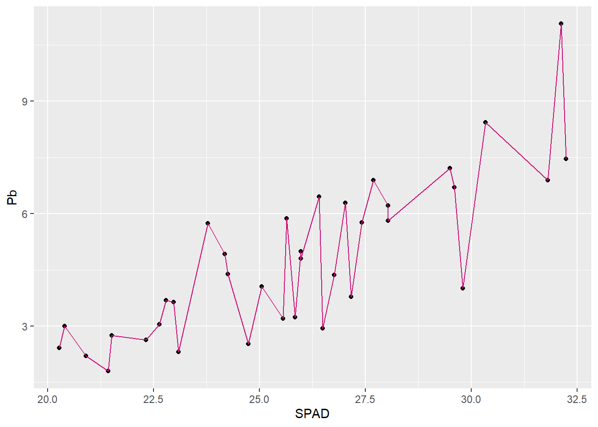
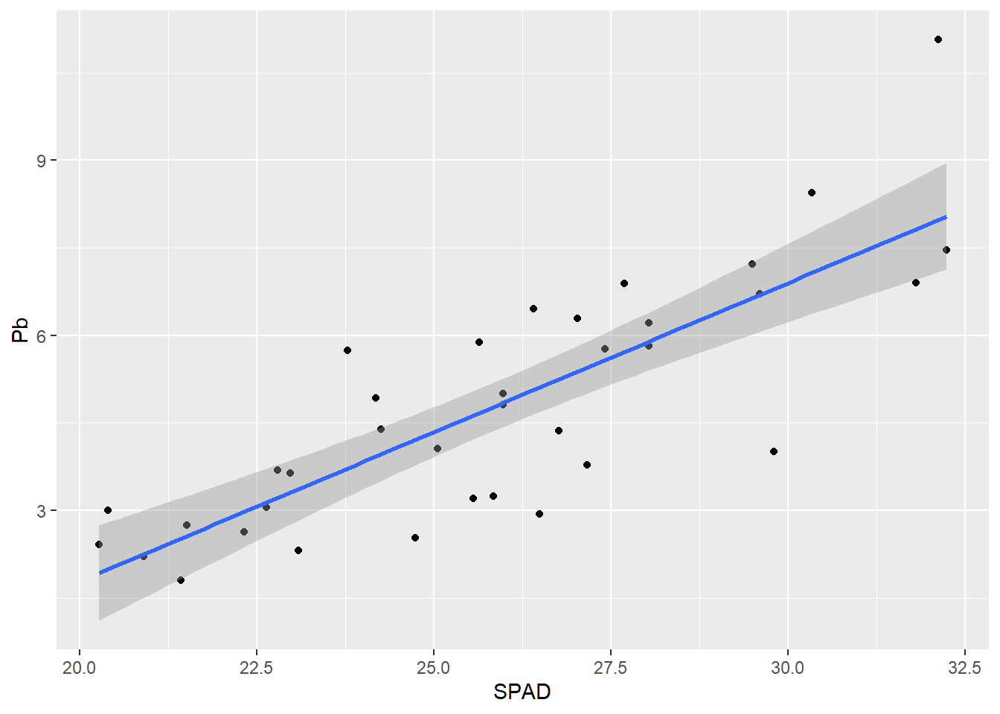
Al igual que hicimos con lineplot.CI, podemos agrupar los datos por algún factor según alguna característica que elijamos (color, forma, relleno, tamaño, etc.). Por ejemplo si queremos distinguir los puntos por color según el estrés térmico:
G2 <- ggplot(HOJA,
aes(SPAD, Pb,
col = ET)) + # agregamos en el aes por qué parámetro dividir
geom_point()
G2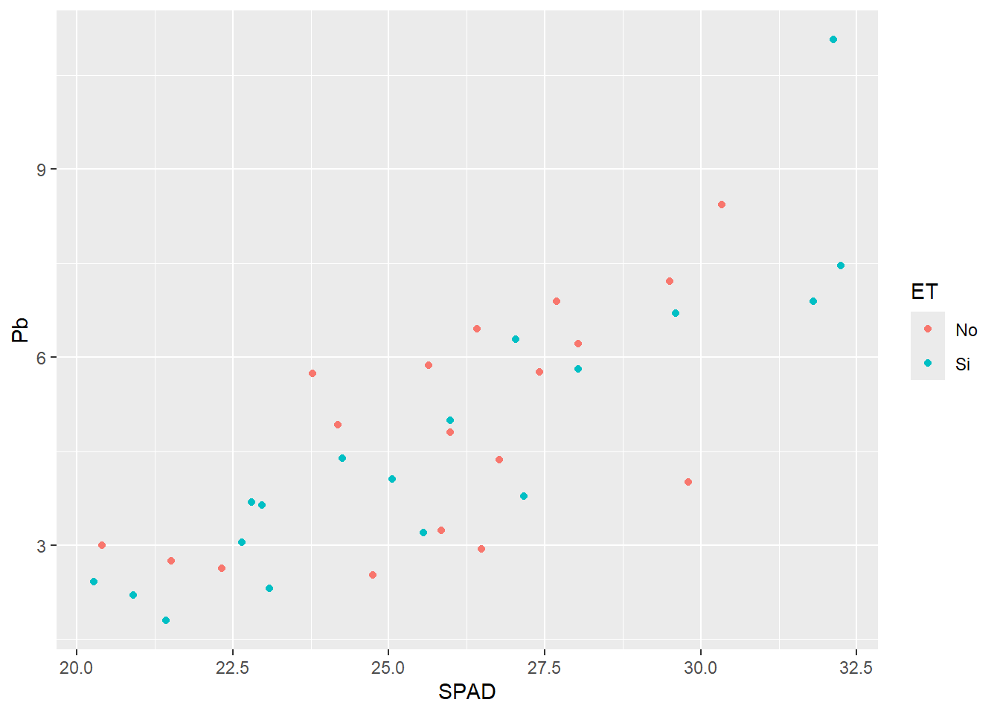
Ahora si queremos graficar la variable discreta donde para cada valor del eje x tenemos varios valores de y, por defecto geom_point grafica los puntos individualizados, a diferencia de lo que hacía lineplot.CI
ggplot(HOJA, aes(SPAD_cat, Pb)) +
geom_point()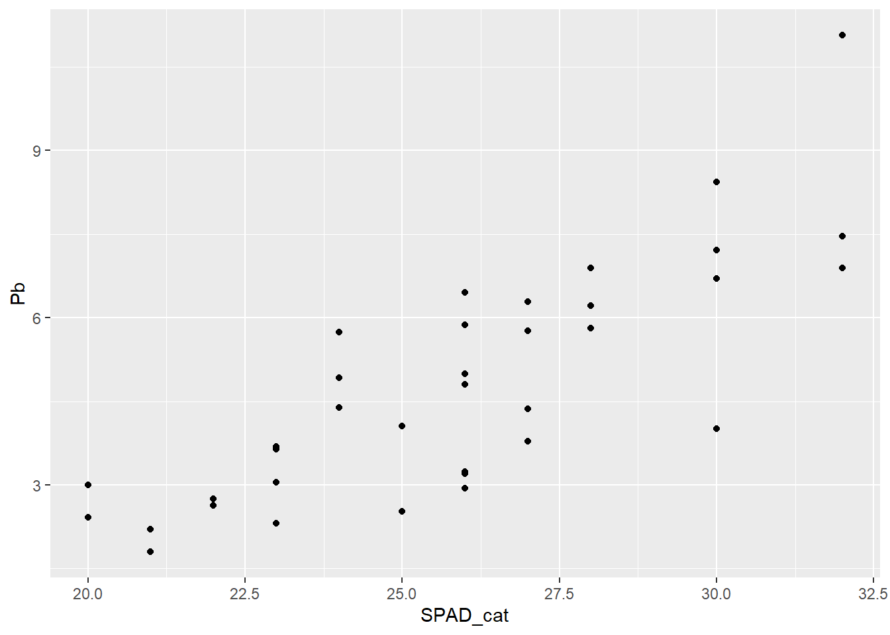
Entonces para graficar la media y el error estándar, incluimos una capa de stat, que realiza cálculos con la variable respuesta. En este caso, stat_summary nos permite graficar el valor medio:
ggplot(data = HOJA,
aes(SPAD_cat, Pb))+
stat_summary(fun=mean, geom="point") +
stat_summary(fun.data=mean_se, geom ='errorbar')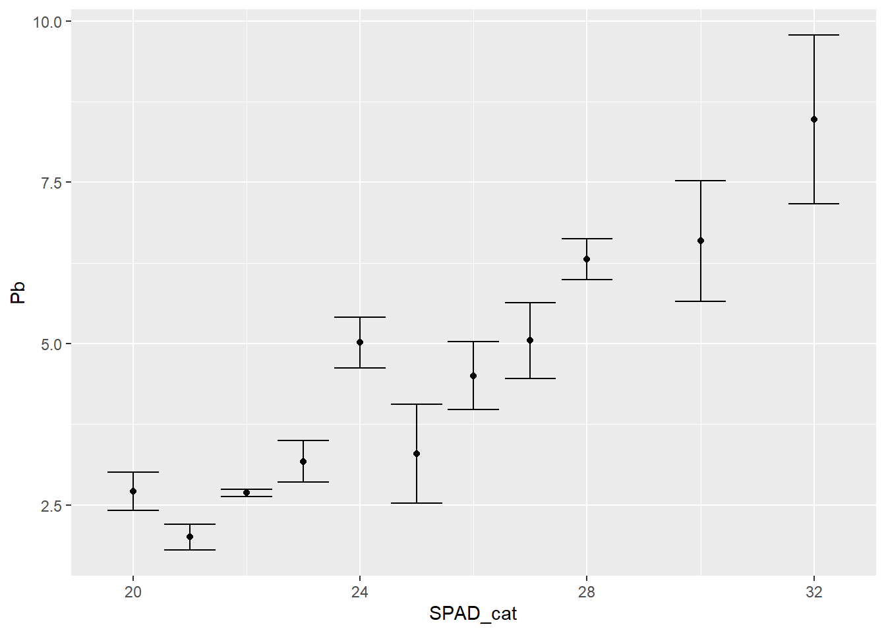
# podemos mejorar un poco la estética
ggplot(data = HOJA,
aes(SPAD_cat, Pb))+
stat_summary(fun=mean, geom="point", size=5, col = "azure4") +
stat_summary(fun.data=mean_se, geom ='errorbar', width=0.2)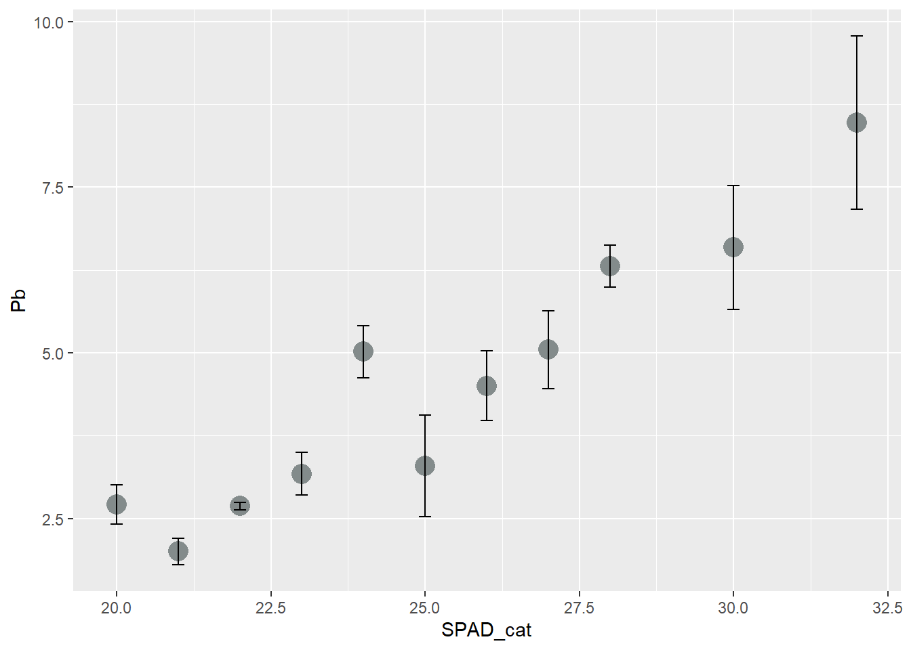
Actividad 3
- Realice una representación gráfica del modelo de regresión realizado en la actividad 2. Incorpore en la gráfica una clasificación por estrés térmico por color.